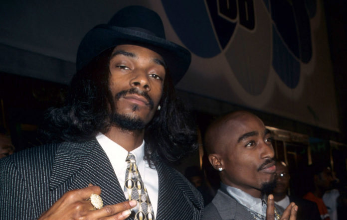
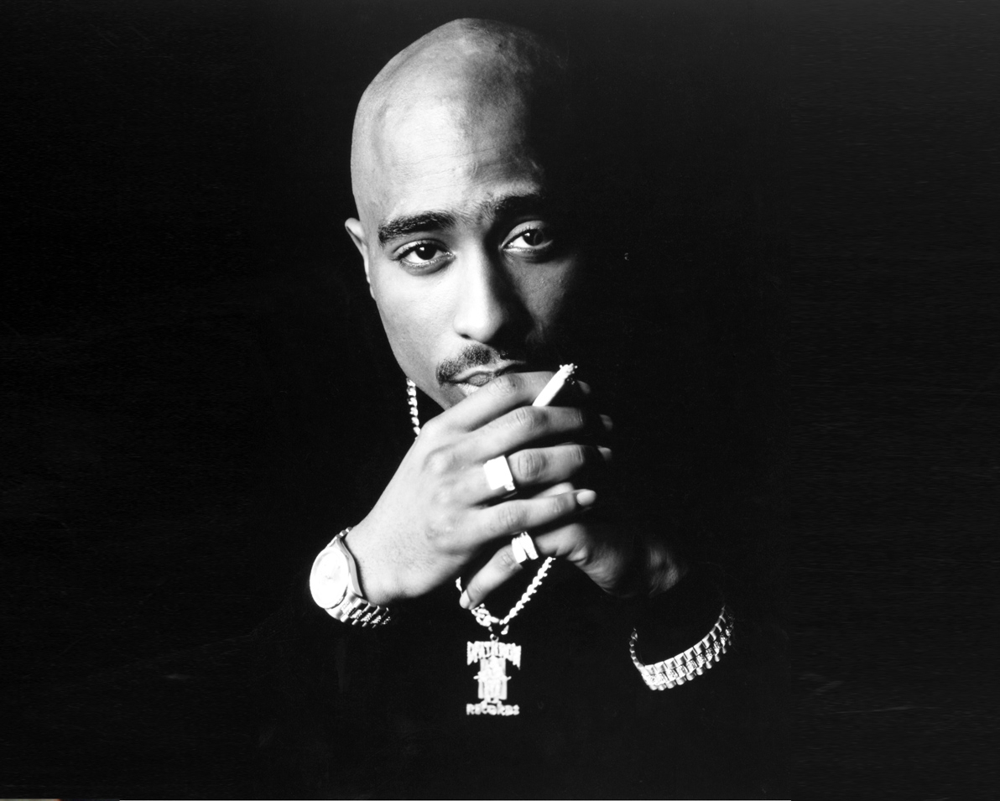
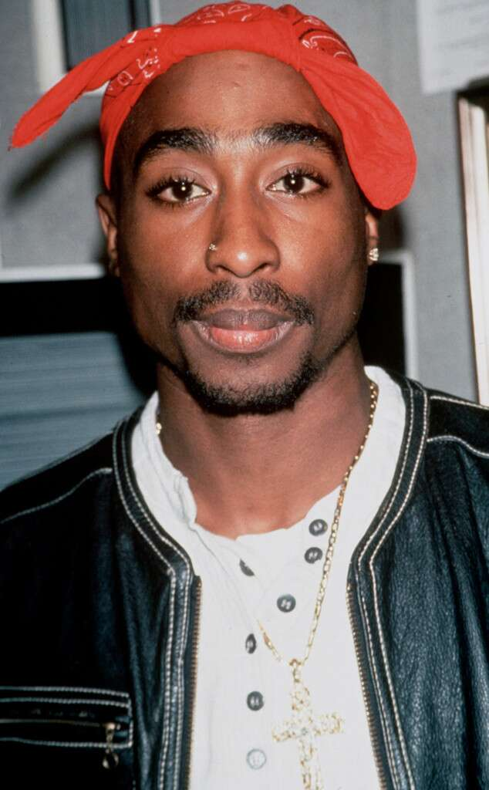
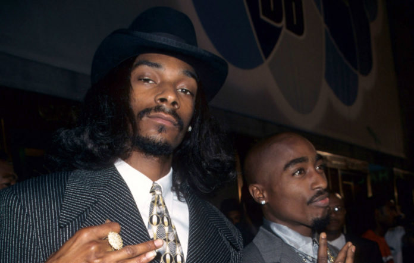
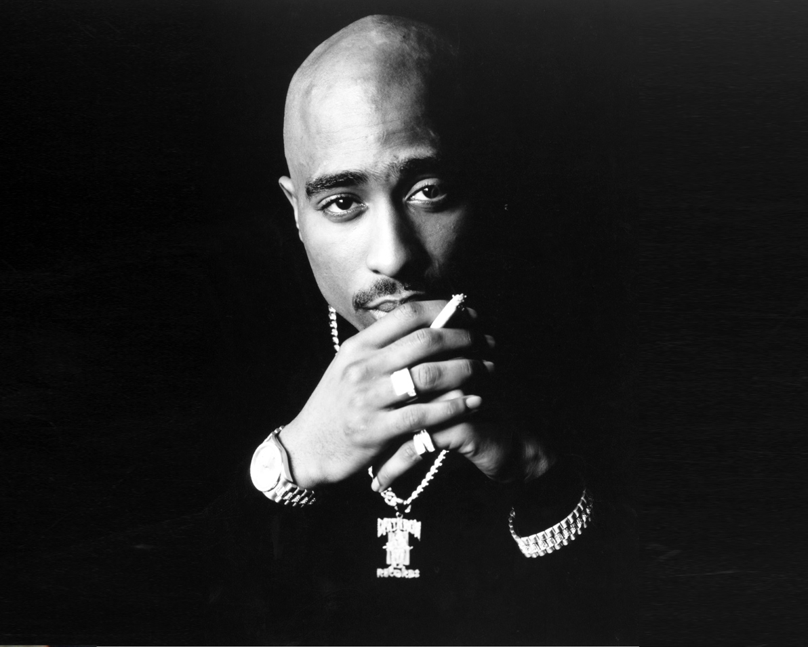
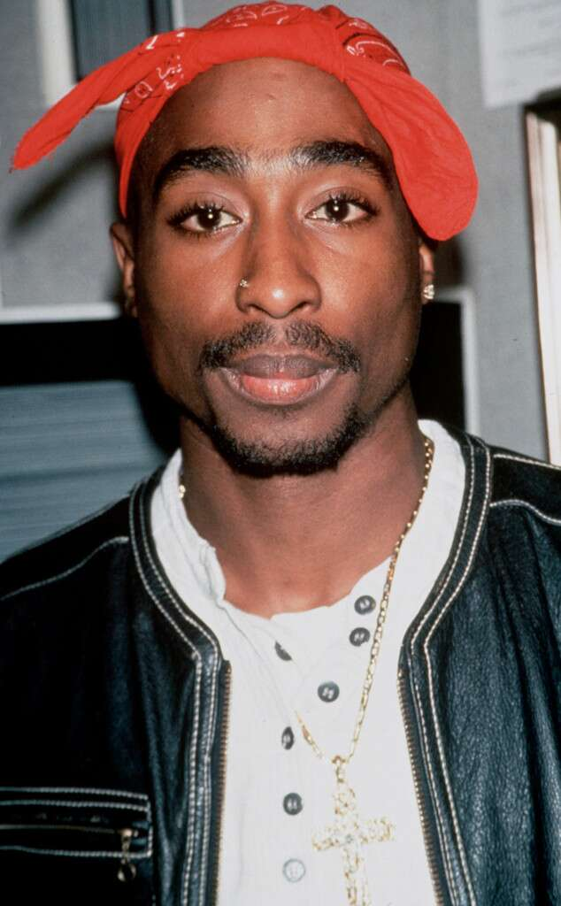

Tupac Shakur
 





One of the Greatest Rappers of all time.
Some say the blacker the berry, the sweeter the juice
I say the darker the flesh then the deeper the roots
I give a holler to my sisters on welfare
Tupac cares, if don't nobody else care
And uh, I know they like to beat ya down a lot
When you come around the block brothas clown a lot
But please don't cry, dry your eyes, never let up
Forgive but don't forget, girl keep your head up
And when he tells you you ain't nuttin' don't believe him
And if he can't learn to love you, you should leave him
'Cause sista you don't need him
And I ain't tryin' to gas ya up, I just call 'em how I see 'em
You know it makes me unhappy (What's that)
When brothas make babies, and leave a young mother to be a pappy
And since we all came from a woman
Got our name from a woman and our game from a woman
I wonder why we take from our women
Why we rape our women, do we hate our women?
I think it's time to kill for our women
Time to heal our women, be real to our women
And if we don't we'll have a race of babies
That will hate the ladies, that make the babies
And since a man can't make one
He has no right to tell a woman when and where to create one
So will the real men get up
I know you're fed up ladies, but keep your head up
Keep ya head up, ooh, child, things are gonna get easier
Keep ya head up, ooh, child, things'll get brighter
Keep ya head up, ooh, child, things are gonna get easier
Keep ya head up, ooh, child, things'll get brighter
Aiyyo, I remember Marvin Gaye, used to sing to me
He had me feelin' like black was tha thing to be
And suddenly tha ghetto didn't seem so tough
And though we had it rough, we always had enough
I huffed and puffed about my curfew and broke the rules
Ran with the local crew, and had a smoke or two
And I realize momma really paid the price
She nearly gave her life, to raise me right
And all I had to give her was my pipe dream
Of how I'd rock the mic, and make it to tha bright screen
I'm tryin' to make a dollar out of fifteen cents
It's hard to be legit and still pay your rent
And in the end it seems I'm headin' for tha pen
I try and find my friends, but they're blowin' in the wind
Last night my buddy lost his whole family
It's gonna take the man in me to conquer this insanity
It seems tha rain'll never let up
I try to keep my head up, and still keep from gettin' wet up
You know it's funny when it rains it pours
They got money for wars, but can't feed the poor
Said it ain't no hope for the youth and the truth is
It ain't no hope for tha future
And then they wonder why we crazy
I blame my mother, for turning my brother into a crack baby
We ain't meant to survive, 'cause it's a setup
And even though you're fed up
Huh, ya got to keep your head up
Keep ya head up, ooh, child, things are gonna get easier
Keep ya head up, ooh, child, things'll get brighter
Keep ya head up, ooh, child, things are gonna get easier
Keep ya head up, ooh, child, things'll get brighter
And uh
To all the ladies havin' babies on they own
I know it's kinda rough and you're feelin' all alone
Daddy's long gone and he left you by ya lonesome
Thank the Lord for my kids, even if nobody else want 'em
'Cause I think we can make it, in fact, I'm sure
And if you fall, stand tall and comeback for more
'Cause ain't nothin' worse than when your son
Wants to kno' why his daddy don't love him no mo'
You can't complain you was dealt this
Hell of a hand without a man, feelin' helpless
Because there's too many things for you to deal with
Dying inside, but outside you're looking fearless
While the tears, is rollin' down your cheeks
Ya steady hopin' things don't all down this week
'Cause if it did, you couldn't take it, and don't blame me
I was given this world I didn't make it
And now my son's gettin' older and older and cold
From havin' the world on his shoulders
While the rich kids is drivin' Benz
I'm still tryin' to hold on to my survivin' friends
And it's crazy, it seems it'll never let up, but
Please, you got to keep your head up